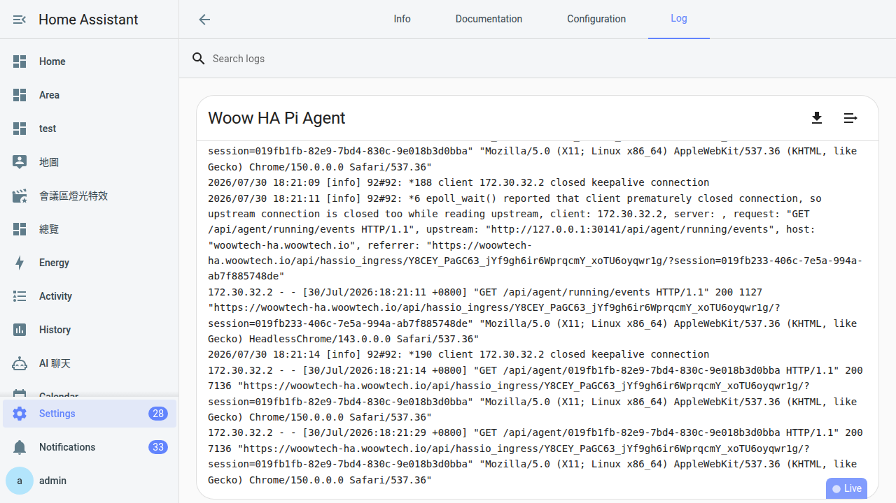

常見卡關手冊
前面 21 章都在教「怎麼做」，這章反過來——當你卡住了，從症狀反查解法。401／402／404、Ingress 掉線、影片管線失敗、Skill 裝不起來，每一項都給 2-3 分鐘級別的可行動處置。這是全書最後一頁，也是你未來最常翻回來的一頁。
這章怎麼用
寫這章的動機很簡單：你不會照書本順序卡關。可能第 6 章貼完金鑰兩個月都沒事，某天早上突然 401；可能第 18 章的影片管線平時順順跑，某個週末忽然全黑畫面。這時候你不會想從頭翻教學，你只想知道「現在跳這個錯，我下一步該點哪裡」。
所以這章的結構是症狀優先：
- 先跑 5 秒鐘的「快速自檢」——排除 80% 的低級失誤。
- 剩下的按你看到的畫面找章節——右上跳 401？找 401 那一節。點側邊欄跳 404？找 404 那一節。
- 每一節末尾標「該回哪一章重讀」——這章負責「馬上救火」，深入原理還是回原本章節看。
你不會看完這章，你會需要的時候翻。所以每一節都獨立成篇、標題直接寫症狀、不假設你讀過其他節。書籤存起來、之後有事再回來翻就好。
快速自檢（先跑這個）
打開 Pi Agent 遇到問題，先跑這三個檢查再對症下藥。80% 的問題會在這裡就找到原因，不用往下翻。
-
Add-on 是不是還 Running
回 HA 主頁 → 設定 → 附加元件 → 找到 Woow HA Pi Agent → 看狀態。「已啟動」（Started）綠色圓點才算活著。如果是「已停止」或紅色，按一下 Start，等 30-60 秒讓它跑完初始化再回來。
-
模型下拉有沒有選對 Provider
回 Pi Agent 對話畫面，看聊天框上方的模型下拉——顯示的是「Provider ／ 模型名」（例如 GLM ／ glm-4.6）。如果下拉是灰的、或顯示「No model」，代表 Models 面板還沒設對。回第 6 章把金鑰貼好、按 Test 綠燈。
-
電腦本身能不能對外
開瀏覽器新分頁打
https://www.google.com——打得開就是網路正常。如果連 Google 都打不開，先修家裡網路，這不是 Pi Agent 的問題。網路正常但特定 provider（例如 GLM 那家）連不上，通常是那家 API 服務暫時中斷，去該家 status page 查。
三項全綠還是有問題？繼續往下按症狀找。
401 Unauthorized：金鑰的問題
症狀：對話送出後右上角跳紅色訊息「401」或「Unauthorized」，AI 沒回應。
白話翻譯：AI provider 的門口大爺說「你這張門票是假的」。九成是金鑰問題，一成是別的。
| 可能原因 | 發生機率 | 怎麼修 |
|---|---|---|
| API 金鑰打錯／過期 | 90% | 回 第 6 章教過的 Models 面板 → 該 provider → 貼一次新金鑰 → 按 Test，看見綠燈才算數。 |
| baseUrl 打錯 | 5% | 回 第 11 章對照該 provider 的正確 baseUrl，Models 面板編輯 provider 貼正確的。 |
| Provider 服務中斷 | 5% | 去該家的 status page 查（GLM、OpenAI、Anthropic 都有官方 status 頁）。等他們恢復，你什麼都不用做。急的話切別家。 |
常見誤解：401 不代表你網路壞、不代表 Add-on 壞、不代表你電腦有問題。就是「這張門票 provider 不認」而已。冷靜換金鑰就對了。
402 Payment Required：額度不夠
症狀：對話送出後跳 402、或錯誤訊息裡有「insufficient_balance」「余额不足」「rate limit」「quota exceeded」這類字眼。
白話翻譯：金鑰是對的，但那個帳戶「錢用完了」或「今天配額用完了」。
-
先判斷是「花完錢」還是「暫時被限流」
錯誤訊息裡有
insufficient_balance、余额不足、credits、quota——是花完錢。有rate_limit、too many requests——是暫時被限流（等 1-2 分鐘就好）。 -
加值（花完錢的話）
回該 provider 原網站的帳戶頁儲值。GLM 在
bigmodel.cn、OpenAI 在platform.openai.com、Anthropic 在console.anthropic.com、OpenRouter 在openrouter.ai。儲值完不用重啟 Add-on，下一次對話就會恢復。 -
或者切別家（第 13 章教過）
切換到另一個 provider 是零成本的——只要模型下拉切過去就好。這也是為什麼第 10 章建議至少接兩家 provider。單押一家某天用完額度就完全不能用 AI，接兩家就有備援。
常見「一天到晚額度用完」的 provider：GLM 新戶送的額度（幾百萬 token 用完就沒了）、Groq 免費配額（每天有限額，隔天重置）、OpenRouter 少量試用金。這幾家用起來要有心理準備，主力模型建議挑要付費但穩定的。
404 Not Found：Ingress 或路徑錯
症狀：點側邊欄 Pi Agent、或 Add-on 頁按 Open Web UI 之後，看到白底黑字「404 Not Found」或「Ingress token invalid」。
404 幾乎都跟 Ingress（HA 用來代理 Add-on 網頁的機制）有關。三種常見狀況：
| 狀況 | 症狀細節 | 解法 |
|---|---|---|
| Ingress token 過期 | 剛才明明可以用，隔一陣子回來就 404 | 回 HA 主頁重按一次側邊欄的 Pi Agent——HA 會重新發一張 token，通常就通了。極少數要 ha core restart。 |
| Add-on 沒 Running | 整個 Pi Agent 打不開，Open Web UI 沒反應 | 回附加元件頁 → Info 分頁看狀態。停止的話按 Start 再等 30-60 秒。 |
| 側邊欄按鈕不見 | Pi Agent 好好的，但 HA 左邊側欄找不到入口 | 去 Add-on 的 Info 分頁 → 「顯示在側邊欄」（Show in sidebar）開關要打開。這在 v0.8.0 之後 Add-on 會自動開，但偶爾 Supervisor 太忙沒開成功，手動打一次。 |
第 3 章詳細講過側邊欄與 Ingress 的關係。這裡是速查——先把三個狀況照上面表格排除。
對話一直轉圈不回
症狀：訊息送出去了，右下角出現轉圈圈的動畫，但等了很久 AI 都沒回應。沒有明顯錯誤訊息。
這狀況比 401／402／404 難診斷，因為看不到明確錯誤。按下面順序排除：
-
先確認前置條件
模型下拉有選？對應 provider 的 Models 面板 Test 有綠燈？兩個都沒 → 回第 6 章先修這個。都有 → 往下。
-
模型「思考很久」是正常
Reasoning 模型（GLM-4.6、Claude Sonnet 4、DeepSeek-R1）在回答之前會先想 30-60 秒，看起來像卡住但其實在算。第 12 章講過原理。等到 90 秒還沒動再懷疑真的卡住。
-
網路擋到 provider baseUrl
有些網路環境（企業 VPN、學校 WiFi、某些國家）會擋 OpenAI／Anthropic 的網域。從瀏覽器開新分頁打 provider 的 baseUrl（例如
https://api.openai.com），看得到頁面代表通、看不到代表被擋。被擋就切別家（例如換成 GLM，中國網段 GLM 通、OpenAI 常被擋）。 -
Add-on 本身 hang 住了
極少見但會發生：pi-web 那個程式偶爾會 hang，看起來還在跑但實際上不回應。不用手動處理——Add-on 有裝 Watchdog（v0.10.0 加的），Supervisor 會每分鐘 probe 一次
/api/home，發現沒回應就自動重啟。等 60-90 秒它會自己好。
都試過還是不回，開 Add-on 的 Logs 分頁看最後 30 行——通常會有紅字訊息告訴你哪裡卡。看不懂 log 也沒關係，把最後 30 行複製起來去GitHub Issue 求救。
影片管線失敗（一表通）
影片管線（第 18 章教的 pitch_video）是最容易卡的地方，因為它串了 5-6 個工具——TTS、Playwright 截圖、ffmpeg 合成、字幕燒、rclone 上傳——任何一環壞都會整條掉。按你看到「卡在哪一步」對症下藥：
| 你看到的症狀 | 大概率原因 | 怎麼修 |
|---|---|---|
AI 一直卡在寫腳本（script.yaml）階段，寫出來的東西亂七八糟 |
模型太輕，寫不出結構化的影片腳本 | 切 reasoning 模型（GLM-4.6、Sonnet 4）。第 12 章講過為什麼。 |
| Playwright 錄畫面產出的影片全黑或全灰 | Chromium 沒下好、或 Playwright cache 壞了 | Configuration 分頁把 reset_video_tools 打開 → 儲存 → 重啟 Add-on → 等 3-8 分鐘重新下 720MB → 重下完務必自己把開關翻回 false（第 18 章踩雷區有寫：這個開關不會自動彈回，忘了關每次重啟都要再等 3-8 分鐘）。 |
| 影片有畫面但沒配音 | edge-tts 被擋（微軟 TTS 端點） | Logs 分頁搜 edge-tts，看有沒有 timeout／network error。有的話代表家裡網路擋 speech.platform.bing.com，換 VPN 或叫 AI 改用別的 TTS。 |
| 影片有畫面有配音但沒字幕 | SRT 產生了但沒燒進畫面 | 看 pitch_video skill 的 SKILL.md——燒字幕是 ffmpeg -vf subtitles= 的步驟。Logs 搜 subtitles，通常是字型不見（fonts-noto-cjk 沒裝到）或 SRT 檔路徑錯。前者叫 AI 重跑 reset_video_tools；後者叫 AI 看 script.yaml 對照。 |
| 影片做好了但上傳失敗 | rclone Google Drive token 過期 | 回第 19 章教過的 rclone --config=/data/pi-agent/rclone/rclone.conf config 重新過一次 OAuth。token 通常一個月不動會失效，過期後這樣重新 auth 就好。 |
整條管線一開始就跑不動、找不到 python／ffmpeg／rclone |
video-tools-init 第一次啟動沒跑完 |
Configuration 分頁 reset_video_tools 開 → 重啟 → 等它 3-8 分鐘把 720MB 下完（第一次真的需要這麼久）。Logs 分頁搜 video-tools-init 看進度。 |
log_level 改成 debug，重啟，Logs 分頁會有超詳細的每一步輸出。看完問題找到之後記得改回 info，不然 log 會爆量。Skill 裝不起來
第 15 章教過 Add from URL、第 16 章教過自己寫。裝不上的常見狀況：
-
Add from URL 按下去完全沒反應
兩個可能：（1）URL 打錯——檢查 GitHub 網址有沒有多空格、少字元；owner/repo 縮寫（例如
elmo/fridge-check）也可以，但拼錯就抓不到。（2）repo 是 private——Pi Agent 用預設 git 客戶端 clone，private repo 沒有 token 抓不到。改 public，或用SCP 本地上傳繞過。 -
clone 完 Skills 面板看不到新 skill
先重整 pi-web 頁面（F5）——面板通常懶得自動更新。還是沒有 → 確認 clone 進來的 repo 根目錄有
SKILL.md（大寫 SKILL、小寫.md）。有些 repo 把 skill 放子資料夾，Pi Agent 抓不到。 -
Skill 出現在列表但 AI 沒用到
問題出在
SKILL.md的 description 欄——AI 靠這欄判斷「這一輪要不要啟用這個 skill」。寫得太籠統（例如「幫使用者做家事」）AI 就不會 match。回第 16 章教的三原則之一：description 要具體、要提到「使用者說什麼／做什麼」時觸發。 -
Skill 出現、description 也寫對了，AI 還是不用
切 reasoning 模型再試。非 reasoning 模型（GLM-4-Flash、Haiku 這類輕量的）常常忽略 system prompt 裡的 skill——這在第 12 章解釋過原理。
Sidebar 按鈕消失
HA 左邊側欄找不到 Pi Agent 這個入口？三個檢查點：
-
Add-on 的 Info 分頁「顯示在側邊欄」有沒有開
設定 → 附加元件 → Woow HA Pi Agent → Info 分頁 → 找到 顯示在側邊欄（Show in sidebar） 開關。v0.8.0 之後 Add-on 每次開機都會透過 Supervisor API 自動打開，但偶爾會失敗——手動打開就好，不會影響其他設定。
-
你登入的 HA 帳號是不是 Administrator
Pi Agent 側欄用
panel_admin: true設定，只有 Administrator 角色看得到。如果你是家人分享出來的一般帳號，看不到側欄是正常的。第 3 章提過。想給家人開權限的話，設定 → 使用者 → 該使用者 → 勾 Administrator。 -
HA 重啟一次
極少見的 side panel registration bug：Supervisor 有時候沒把 Panel 註冊到 HA Core，重啟 HA 一次會重新註冊。ha core restart 或 HA UI 的「重新啟動 Home Assistant」都可以。
Add-on 反覆重啟（每 60 秒）
症狀：Add-on 狀態顯示綠燈，但 Logs 分頁看起來每 60 秒就從頭跑一次 video-tools-init／pi-web starting…。用起來也很不穩，對話進行到一半突然斷。
白話翻譯：HA Supervisor 的 Watchdog 每分鐘 probe 一次 /api/home，發現沒回應就自動重啟 Add-on。這是 Pi Agent v0.10.0 之後的保護機制——防止 Add-on hang 住害使用者一直看白畫面。但如果 Add-on 本身初始化就會掛，Watchdog 會變成「每 60 秒殺一次」的無限迴圈。
-
先看 Logs 最後幾行找 error
Logs 分頁往下捲到最新——看紅字或
Error／Failed／fatal。常見的問題：video-tools-init過程中斷（Chromium 下一半失敗）、pi-web 端口被佔用、pi-web 讀不到models.json。 -
如果是 video-tools-init 掛
Configuration 分頁把
reset_video_tools打開 → 重啟 → 讓它重下一次。這是 影片管線那一節的 fallback 大招。 -
暫時關掉 Watchdog 好 debug
Watchdog 一直重啟會讓你連 log 都來不及看清楚。設定 → 附加元件（Add-ons）→ Woow HA Pi Agent → Info 分頁下面的 Watchdog 開關關掉（跟「顯示在側邊欄」同一區） → 現在它掛了就是掛了，不會被自動重啟——你有時間慢慢看 log 找原因。debug 完記得把 Watchdog 再開回來，這是長期運轉的重要保護。
-
還是找不到原因就整組重灌
Add-on 頁 → Info 分頁 → 解除安裝 → 重新從商店 安裝。你的
/data/pi-agent/（session、skills、models.json）不會被刪，重裝是純 image 換新。重裝之後video-tools-init會重跑一次，等 3-8 分鐘。
Logs 該怎麼看
Add-on 的 Logs 分頁是診斷 90% 問題的地方。但第一次看起來像天書。這裡教三招看 log 的技巧。
-
從哪裡打開
設定 → 附加元件 → Woow HA Pi Agent → 上方分頁列選 Log。頁面下半部就是 log 內容，會自動捲到最新。
-
只看最後 30 行
log 動輒好幾千行，往前翻沒意義——問題永遠在最後幾十行。捲到最底、往上抓 30 行就夠診斷絕大多數狀況。
-
搜這幾個關鍵字
用瀏覽器 Ctrl+F 搜以下字眼，命中的那一行通常就是問題所在：
關鍵字 意義 Error/ERROR一般錯誤——最常見，看命中行的訊息 Failed/failed某個步驟失敗——通常後面跟原因 fatal致命錯誤——Add-on 會 crash denied/Permission權限問題——通常是檔案／目錄 chmod 或 SELinux timeout網路超時——連不上 provider／upstream 401/402/404HTTP 錯誤碼——對應本章前面幾節 ENOENT找不到檔案／指令——通常是路徑錯或工具沒裝 EADDRINUSE端口被佔用——通常是 Add-on 沒完全關就重啟了 -
想更詳細就開 debug log
Configuration 分頁 →
log_level從info改debug→ 儲存 → Info 分頁 Restart。debug log 會爆量（一分鐘幾千行）——只在 debug 特定問題時開，找到問題就改回info，不然/var/log會被塞滿。

求救的正確方式
試過本章所有節還是搞不定？去 GitHub Issue。但發 issue 也有正確跟錯誤的方式，發對了兩天有人回、發錯了石沉大海。
-
發 Issue 的地點
https://github.com/WOOWTECH/Woow_ha_pi_agent_add_on/issues先在 issue 列表上方搜尋框輸入你的關鍵字（例如「401」「video-tools」「blank iframe」），八成問題已經有人問過，直接看回答就好，不用重發。
-
要附的資訊（缺一不可）
沒附這些的 issue 通常會被要求補、然後你就要等更久：
- Pi Agent 版本（Add-on 頁 Info 分頁最上方，例如
0.13.1） - Home Assistant 版本（HA UI 開發者工具 → About，或設定 → 系統 → 修復裡的版本號）
- Logs 分頁最後 30 行（用三個 backtick 圍起來貼，issue 才會排版好看）
- 你已經試過什麼（例如「重啟過、換過金鑰、Test 綠燈但送訊息就 401」）
- Pi Agent 版本（Add-on 頁 Info 分頁最上方，例如
-
絕對不要貼的東西
Issue 是公開的，全世界都看得到。以下絕對不要貼：
- API 金鑰（貼了立刻換一組，你的舊金鑰要當作已洩漏）
- 家裡對外 IP（Nabu Casa 網址、DuckDNS 網址、家裡 public IP）
- 任何個資（家人姓名、地址、電話）
- Session 檔案（可能有你跟 AI 的完整對話，包含隱私）
Log 貼之前用眼睛掃一遍，把敏感字串換成
<REDACTED>。 -
用英文寫（如果你敢）
維護者能讀中文，但 issue 用英文寫的話有機會被全球其他使用者看到並幫忙回答——不只維護者一個人。不敢英文寫的話用中文也 OK，維護者會回。
Bearer <REDACTED>。萬一貼出去了，立刻回原 provider 網站 revoke 那組金鑰、重發一組新的。其他常見卡關（快速條列）
前面幾節覆蓋了 90% 的問題。這邊補充一些邊緣狀況：
-
整個 pi-web 頁面完全打不開（不是 404、是連載入都沒有）
先確認 HA 本身是不是好的——開另一個瀏覽器分頁進 HA 主頁，能開就 HA 正常。HA 也開不了那是 HA 掛了不是 Pi Agent 的問題，先修 HA。HA 好、只有 Pi Agent 打不開，回404 那一節檢查 Add-on 狀態。
-
頁面打得開但整片空白／灰白
按 F12 開瀏覽器 DevTools → Console 分頁看紅字。常見的：
Failed to load /_next/...（Ingress asset 沒轉好，Add-on 重啟一次）、ChunkLoadError（瀏覽器 cache 壞了，Ctrl+Shift+R 強制重整）。 -
對話送不出去（Send 按鈕灰的）
模型下拉沒選任何東西——Send 就會灰。模型下拉點一下、選一個 provider 的模型，Send 就會亮。這個超常見，尤其是 session 剛開的時候。
-
覺得一切正常但 Logs 分頁空空的
log_level設得太高——預設info只印重要事件，設error只印錯誤。想看正常運作也要 log，改info或debug。 -
Session 開一開就自動退出，回到首頁
你不小心把 session 檔案刪了或改壞了。
/data/pi-agent/sessions/底下的.jsonl檔是每個對話的完整內容，改壞它 pi-web 讀取失敗會退回首頁。回第 20 章教的還原方式，把 HA snapshot 裡的 sessions 資料夾拉回來。 -
更新後好像變慢了
第 21 章教過的：更新後第一次啟動會重跑
video-tools-init檢查（雖然 sentinel 存在會秒過，但還是要跑）；另外 pi-web 的.nextcache 會重建。第一次慢很正常，第二次啟動之後就會恢復。連續慢兩三次以上再懷疑真的變慢。
常見問題
本章沒寫到我的症狀怎麼辦？
發 GitHub Issue 多久會有人回？
有沒有付費支援？急件想快點解決
我發現本章寫錯了、或有更好的解法想貢獻，怎麼辦？
Woow_ha_pi_agent_tutorial repo，直接改 ch22_troubleshoot.html 送 PR。（2）Issue——不會 git 的話直接開 issue 寫「第 22 章的 X 節建議改成 Y」，維護者會處理。（3）GitHub Discussion——不確定該不該進正式手冊的技巧，貼 Discussion 大家交流。教學文件跟軟體一樣是活的，社群回饋越多越好。Add-on 更新前要先看什麼避免踩坑？
升到 v0.13 之後所有對話都 401，是不是壞了？
影片管線第一次跑就失敗，有辦法先確認工具都裝好了嗎？
docker exec -it addon_<你的slug>_woow_ha_pi_agent bash（slug 每一台 HA 都不一樣，第 19 章教過怎麼撈——通常長得像 addon_a1b2c3d4_woow_ha_pi_agent；先 docker ps | grep pi_agent 抓完整名字）。進 shell 後依序打 which python3、which ffmpeg、which rclone、which chromium——每一個都要回出路徑（/data/pi-agent/venv/bin/python3、/usr/bin/ffmpeg...）才代表裝好。有 not found 就代表 video-tools-init 沒跑完，回影片管線那節用 reset_video_tools 重跑。tablet 或手機瀏覽器上傳圖片給 AI 一直失敗，PC 就沒事
更新之後我的 skill／session／設定會不會不見？
/data/pi-agent/ 底下（sessions、skills、models.json、rclone.conf、venv、playwright-cache），這個資料夾是 HA 幫 Add-on 掛的 persistent volume，更新只換 image、不動 /data。唯一例外是 v0.10.0 之前——那時 pi 的 worktree 存在 container rootfs 會被更新洗掉，v0.10.0 之後改 HOME=/data/pi-agent/home 就修了。現在你的資料都是安全的，也都在 HA snapshot 備份範圍內。